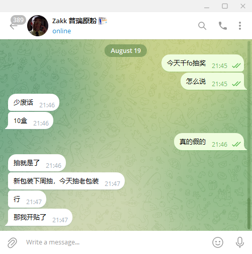
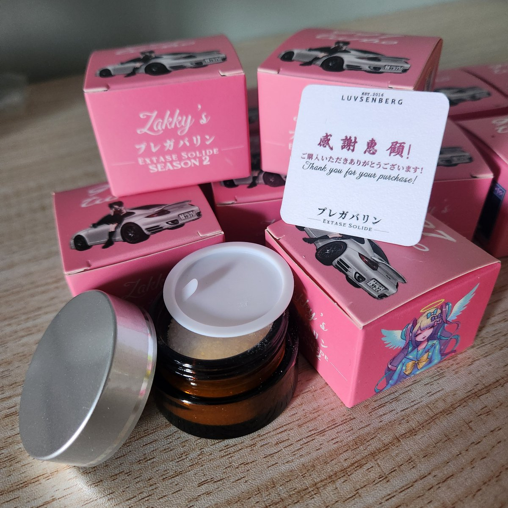

夢夢夢夢梦2.0（互fo寻回）
@yyyyume0527
@pr80net @soobin4869 七夕在家推galgame的来，顺便恭喜千fo🎉🎉祝做大做强呀！！！
上次的中空投还在快递站过几天去拿，等我返图好吧吼吼吼


pr80.net 永夜安港
@pr80net
跪谢扎叔😭...永夜安港【千fo抽奖贴】
依旧是来自@soobin4869 扎鸡叔的幸运空投，千fo扎鸡叔直接选出10位幸运观众，【转帖+评论】，收到过空投的po出你们的美照返图，没收到过空投的po出今天七夕的日常，永夜安港运营至今感谢大家的支持，也感谢扎鸡叔的支持🥹🥹祝各位永远要幸福，永远要得到陪伴 https://t.co/lhMTUvoRsU